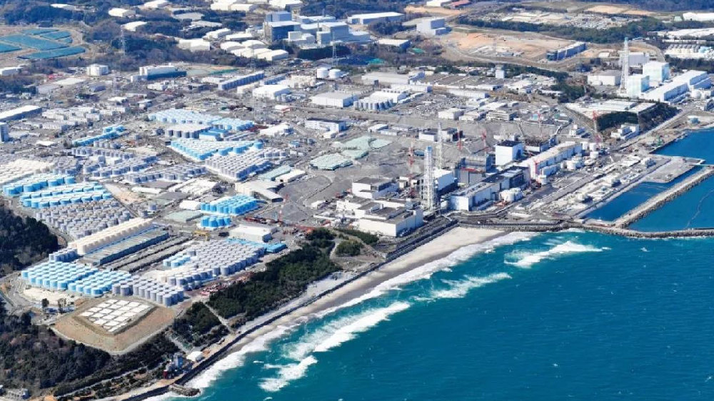
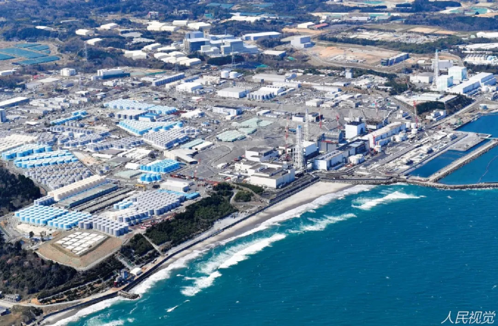
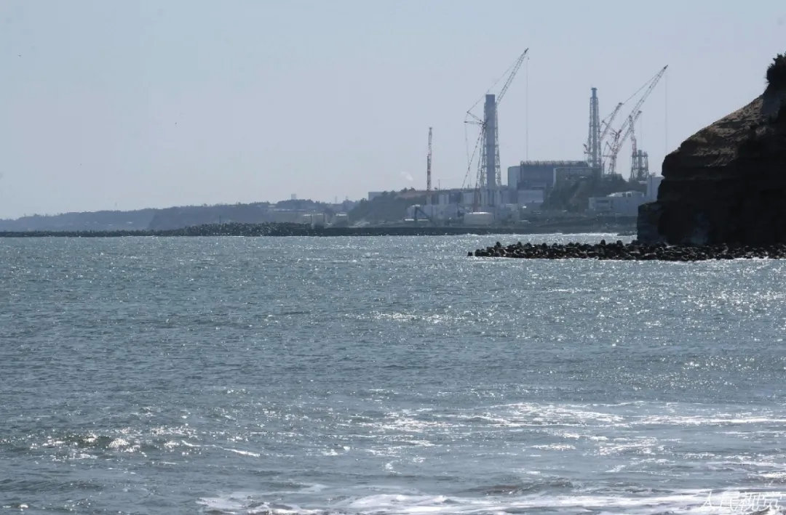

福岛核污水不能忽视的六大问题，日本前首相直言应放弃核电
国务院发展研究中心研究员 王亦楠
（2021年4月15日）
4月13日，日本政府正式决定“将福岛核污水排入大海”，引发舆论哗然。将太平洋当作无休无止核污水的垃圾桶，是不是开启了全人类为福岛核泄漏埋单的灾难模式，目前国际社会无论官方还是民间，都有不同的声音。而国际原子能机构（IAEA）公开对日本的决定表示接受，有核电业界人士也拿“目前沿海核电站都是将废水直接入海”说事，很容易让人以为“福岛核污水入海”可能只是小事一桩，大可不必杞人忧天。
福岛核污水排入太平洋，是关乎人类命运的重大事项，既是国际政治问题，也是严肃科学问题。政治往往要考虑平衡和博弈，但科学容不得半点儿含糊和虚假。对福岛核污水的关注，不能避重就轻、粉饰太平，六个关键问题不容忽视。

一、“福岛核污水处理后无害论”存诸多疑点、站不住脚
一个必需特别强调的事实是：福岛核污水是发生了重大核事故后产生的核污水，与目前正常运行的核电站的废水排放，两者无论在放射性物质的数量上还是成分上，都有很大区别。忽略这个要害问题，很容易就把福岛核污水的讨论引到“无毒无害”的方向。
核事故后产生的废弃物（不只是核污水），放射性污染有多严重、能不能消除，我国长期从事核反应堆和核安全研究的资深专家、原核工业部副部长李玉仑博士（师从德国著名核能专家Diete
Emendoerfer教授）于2013年公开发表的特别报告《中国核电发展及其安全风险对策研究》，对此做了科学、明确的回答：
一是反应堆核裂变过程中会产生250多种放射性核素，具有很强的放射性。正常运行的核电站，占放射性总量98%以上的裂变产物都会留存在燃料芯体中。而一旦发生堆芯熔化的严重事故、导致放射性物质大量向环境释放，对生态环境和公众健康的影响就很严重，甚至会造成灾难性后果。
二是核裂变产生的放射性物质既有极强放射性，还有很大毒性。目前长寿命、高放射性的核素没有任何物理化学方法能消除，只能等其衰变至无害水平，这一过程长达几万至几十万年（比如，锶90、铯137等核素的放射毒性要隔离300～500年才能达到安全水平，而钚239、锝99等核素则要隔离几十万年才安全）。
福岛核电站正是最严重的堆芯熔化事故。过去10年，日本几次宣布在核电厂周边土壤检测到剧毒物质钚，也有多个报道称白令海峡和加拿大、美国的西海岸都有检测到锶铯等核素、发现海洋生物变异，表明福岛的放射性污染物已无法避免地释放到了环境中。然而，目前日本却对核污水中比氚要严重得多的长寿命、高放射性核素只字不提，仅用“已经过放射性废水净化处理”一句话一带而过。
既然人类目前还没有任何物理化学手段能消除长寿命、高放射性的核素，且美国三哩岛核事故产生的9000吨核污水就花了14年才处理完，不知日本是如何确保百万吨巨量核污水会净化处理到没有危害的呢？既然入海的核污水“已达无害标准”，为何日本官方表示水蒸晾晒、地层注入等其他处置方式都有不可控的风险呢？为何不倾倒在琵琶湖或东京水库、做宝贵水资源加以利用呢？
需要强调的是，目前世界上还没有重大核事故后的巨量核污水排放入海的先例，既没有国际第三方机构对处理后核废水进行检验再排海的规定，也没有相关的检验程序和标准。IAEA总干事虽然表态说“应努力避免核污水排海造成危害”，但核污水倾倒前后如何做到全过程公开透明且严密的监管，还有太多未知数。
二、福岛核污水难题反映的是人类最高科技水平的无能为力
福岛核事故处理之棘手在人类核电历史上前所未有。由于存在诸多重大技术瓶颈，本身就是科技强国的日本早就向国际社会发出求助、以共克难关，然而进展甚微，很多难题至今无解。核污水每天以一二百吨的速度增长，何时能止住，谁也不知道。遭受放射性污染的土壤、瓦砾、淤泥、树木、防护服等废弃物的数量也与日俱增，除了露天堆放，没有办法处理，已发生过核废弃物被暴雨冲入河道和大海的事情。
当前福岛的困境，与其说是日本“别无选择”，不如说是欧美日等科技最先进国家在“核事故之潘多拉盒子”打开后依然是束手无策。目前所谓的“核电安全”，还是建立在核电站不出事的基础上。一旦天灾人祸导致核电站出了“万一”，技术最先进的国家也没有好办法。连控制污染扩散都很难，更别提彻底消除核污染了。
福岛核事故再次警示世界：核电不是清洁能源。虽然核电站在运行过程中不像煤电厂那样排放二氧化碳和二氧化硫，但其致命、持续上万年的放射性污染是人类目前最难对付、尚无办法解决的污染。李玉仑博士在报告中特别强调：放射性污染并不仅限于发生了重大核事故的核电站，每个正常运行核电站的乏燃料（编者注：经受过辐射照射、使用过的核燃料）中间贮存、乏燃料后处理、反应堆退役和高放射性废物最终处置，都是高风险环节。如果说重大核事故只是偶发风险的话，那么核废料处理、核电站退役则是所有核电站都必然存在的、无法摆脱的危险重负。

三、不能因无法解决核污染，就用篡改标准、操纵数字来应对
由于人类在消除核污染上还无能为力，所以核灾难发生后，无论日本、前苏联的政府，还是IAEA等国际组织，所作所为都备受质疑。当前，中国、韩国等周边国家和日本国内民众对“福岛核污水入海”表示出的高度担忧、质疑和反对，并非没有根据。
1991年前苏联解体后，泄露出来的最高机密文件显示，不仅苏联当局刻意隐瞒了切尔诺贝利的真正后果，西方世界也选择了拒绝真相。1986年8月IAEA召开第一场切尔诺贝利事故评估的国际会议，没有任何记者和外界观察员获准入场。苏联代表团团长勒加索夫院士在会上做了3个小时的报告，断言“接下来10年应该会有4万人死于切尔诺贝利事故引发的癌症”。然而令人意外的是，西方世界拒绝接受这项预估。经过一场名副其实的“东西协商”之后，“可能死亡数字”由4万降到了4000，并成为后来世卫组织确定的“官方死亡数字”，而当时在国际会议上努力揭开真相的勒加索夫院士，在核事故两周年时，以自杀方式结束了自己的生命。
2018年10月《联合国危险物质及废料的无害环境管理和处置对人权的影响问题特别报告》指出：日本政府在福岛核灾后将公众可接受的辐射量提高了20倍，令人深感不安。专家通贾克表示：“2017年联合国人权监督机制提出，希望日本将可接受的辐射量降回灾难发生前的水平，但日本政府似乎完全置若罔闻。”近10年来，日本国内民众对政府和东电公司在福岛核泄漏问题上掩盖真相的指责，从未间断。
四、目前世界所有核电技术都无法确保不会发生重大核事故
目前全世界的核电技术，无论二代还是三代，无论是石墨堆、沸水堆、还是压水堆，都是核裂变能发电，无法100%确保“不发生核事故”，“大规模放射性外泄的风险”是不以人的意志为转移的科学属性，须谨防“核安全神话”误导政府决策和公众认知。 需要特别强调的是：一是第三代压水堆核电技术是否比二代技术更可靠、更安全，在全世界范围内还需运行实践检验。因为核事故后果不可逆，核电行业的技术创新风险很大，无法像汽车等其他行业那样通过“破坏性试验”来检验其有效性，所以技术先进并不代表更可靠和更安全，必须从若干试验试点开始，经过若干年实践证明后才能推广，这是国际核电界早已形成的共识。实践也证明，切尔诺贝利石墨堆和福岛沸水堆的重大技术缺陷都是核事故之后才充分暴露，之前也都是技术先进、安全性有保障的代表。
二是对于业界常宣传的“已设计了多重安全保障，能极大提高安全性可靠性”，日本核电专家早就指出：“所谓核电站有多重保护系统，若发生什么事故就会自动停止、绝对安全，都是仅止于设计阶段的理论，施工建厂才是大问题。不管核电设计有多完美，实际施工却无法做到与原设计一模一样。福岛核灾证明‘只要有多套备用系统就一定安全’的想法根本不管用，有可能全部系统同时损坏而无法产生功能”。法国原子能委员会强调：“人不可能不出错，目前没有任何技术创新能消除核电站建设和运行中的人为错误。”
五、“核事故发生概率极小”是靠不住的主观先验结论
目前所谓的“第三代核电技术比二代核电技术的安全性提高了100倍”，依然是概率安全。从1979年的美国三哩岛，到1986年的苏联切尔诺贝利，再到2011年的日本福岛，短短32年间，世界上443座核电机组就已发生了3起重大核事故，共涉及6座机组，用二代核电技术宣称的“万年一遇”事故概率很难解释。国际核电界深刻认识到：“核安全的概率计算是不可靠的，用概率安全评价方法分析外部事件（地震、海啸、飓风、洪水等）具有很大的不确定性，两个主观概率参数不宜单独用作核电安全性的判据，要防止被滥用于确定性的决策判断”。
值得注意的是：2012年3月9日国际原子能结构（IAEA）总干事天野之弥向全世界发出呼吁：建有核反应堆的国家对核电项目要“更加谨慎”，因为“今后仍然无法完全排除发生类似事故的可能”。早在2007年就公开指出重大安全隐患的福岛核电站机械设计师小仓志郎在福岛事故后指出：“核电还有太多事无法控制，反应堆的很多问题是目前仪器测不出来的。福岛与切尔诺贝利隔了25年，下一次人类的大规模核灾难或许不用再等25年。”
六、因后患无穷，欧美国家实现电力碳中和并不依靠核电
福岛核事故后，以G7为代表的发达国家转向“2050年电力全部可再生能源化”战略目标。除个别国家有少量在建机组外，发达国家呈现出明显的弃核、减核态势，而全面转向更安全、更清洁、更经济的可再生能源。因为经过40～50年的实践，发达国家对核废料处理、核电站退役等无法摆脱的危险重负和经济负担，有了充分认识：核电既不是加强国防所必需（反而是严重的战略软肋、被攻击目标），也不是培育高端制造能力所必需。
需要特别指出的是，核电并非真正意义上的低碳能源。虽然核电站运行期间不排放二氧化碳，但核电站退役却是个成本极高且时间漫长的过程（甚至比核电站40年寿命期还要长）。也就是说，在核电站已不再产生电力、没有效益的几十年里，却需要大量消耗其他能源来维持整个电厂的冷却。所以，日本核电专家在福岛事故后深刻反思时指出：“核能从开采铀矿到浓缩处理及燃料加工、废液及废土处理，都需要非常庞大的化石燃料。另外，涉及使用后的燃料及高放射性废弃物长年放置、为求安全保管必须动用化石燃料的数量，都是难以估计的庞大，我们等于在盖一座不管是建设或维护都需花费巨资的二氧化碳产生物。”
目前全世界没有一个国家找到了绝对安全、永久处理高放射性核废料的方法，核泄漏事故更是时有发生，所以有国际核电专家指出：“核电是请神容易送神难，人类使用核电等于透支未来”。
日本前首相小泉纯一郎曾自述说，几年前他在参观瑞士地下400米的核废料存储库时，注意到每个密封储存钢罐上都贴着英文标签“核废料！请不要动”，他问工作人员这些核废料需要经过多少年才会失去对人体的伤害力时，工作人员回答：“短则3万年、长则30万年”。小泉纯一郎在回国的飞机上思考：“3000年前的甲骨文，已经很少有人认识，5000年之后，人类社会还有没有人认得英文？假如那时人们从地下挖出这一个个钢罐、要进行一番考古的话，后果不堪设想。”回国后，小泉在各种场合直言不讳：“在我做首相的时候，推动了原子能的发展，那时我相信原子能是安全的、成本低的清洁能源。2011年福岛核事故后，我自己进行了学习，我了解到那全是一派胡言。核电站事关国民的生命危机，我们唯一能做的，就是放弃不可能解决的核废料问题，也就是放弃核电站。”
结语：
无论是35年前的切尔诺贝利，还是10年前的福岛，这个时间对于个人来说可谓相当漫长，但对于一个国家、对于整个人类要摆脱核事故的梦魇，还远远看不到尽头。特别是福岛，真正的麻烦或许才刚刚开始。福岛核灾难再次触碰到了人类目前科技能力的天花板，并开启了全世界共同埋单的模式。
前人不暇自哀，而后人哀之；后人哀之而不鉴之，亦使后人而复哀后人也。在强烈谴责日本决定不负责任的同时，每个拥有核电的国家都应从福岛核泄漏的困境中，清醒地认识现阶段核电的本质和科技的局限，严肃思考人类未来将要为核电付出怎样的代价。尽一切可能防止历史悲剧重演，深刻汲取福岛教训，破除核电安全神话，审慎决策核电选址，尽快弥补安全短板，应是福岛核灾难带给我们的最大警示和启示。
责编 | 周琦
版式 | 孟凡婷
微信值班：周琦
推荐阅读
-
对于日本向太平洋倾泻核污染废水这件事，舆论上各种声音吵成一团。 日本内阁早已做出决定，要在2年之内分批次想太平洋倾泻核废水。大洋彼岸的美国，对决定表示“感谢”。决定当然是遭到邻国中、韩强烈反对。 在社交网络上同样分成两派。支持者认为，太平洋巨大水体体量，能够将废水稀释，最终核辐射量甚至比一根香蕉还低；反对者则质疑，为什么不把废水倒在你们家海域？在这个没人能说服对方的问题上，双方各执一词，争论不休。 不过这一切争论，似乎都要从1986年的切尔诺贝利说起。也正是从那个时候起，不少人谈核色变，福岛核电站事故后，更是加剧了人们的恐惧。
-
 文|缓缓君 首发|缓缓说 4月13日，日本政府正式决定，将在2年后开始把福岛第一核电站的放射性废水排入海洋（太平洋）。 但太平洋不是日本一家的。 受北太平洋环流和副极地环流的影响，带有放射性的核废水将首先扩散到“环太平洋”国家（对北太平洋沿岸国家影响更大），然后逐步扩散到全球。 （德国海洋科学研究机构GEOMARHelmholtz-Zentrum的模拟视频） 中国、韩国、朝鲜、俄罗斯、美国、加拿大等，都将受到牵连。 因此，日本的这一决定，自然是引发了中、韩等国的强烈质疑。
文|缓缓君 首发|缓缓说 4月13日，日本政府正式决定，将在2年后开始把福岛第一核电站的放射性废水排入海洋（太平洋）。 但太平洋不是日本一家的。 受北太平洋环流和副极地环流的影响，带有放射性的核废水将首先扩散到“环太平洋”国家（对北太平洋沿岸国家影响更大），然后逐步扩散到全球。 （德国海洋科学研究机构GEOMARHelmholtz-Zentrum的模拟视频） 中国、韩国、朝鲜、俄罗斯、美国、加拿大等，都将受到牵连。 因此，日本的这一决定，自然是引发了中、韩等国的强烈质疑。 -
《中国经济周刊》记者姚坤 2021年被确立为反垄断“大年”。 4月10日，国家市场监管总局作出行政处罚决定，责令阿里巴巴集团停止滥用市场支配地位行为，并处182.28亿元罚款。这一数额刷新了中国反垄断行政处罚纪录。 4月13日，国家市场监管总局会同中央网信办、税务总局召集34家中国互联网公司召开行政指导会，要求充分发挥阿里案的警示作用，各平台限期一个月全面自检自查、逐项彻底整改。 4月26日，总局再次对互联网巨头出手，依法对美团实施“二选一”等涉嫌垄断行为立案调查。 在阿里和美团之后，下一个会是谁？ 针对平台经济的这场反垄断风暴被认为是中国经济发展中的里程碑式事件。
-
原创：犀利呱/文 当全世界目光都聚焦于日本欲强行向太平洋排放的125万吨核废水时，可能没有人注意到： 日本境内还有高达1.6万吨高度危险的核废料，也已经达到了“储存极限”，并且“更加没有处理手段”。 4月13日上午，日本政府召开内阁会议，正式决定将东京电力公司福岛第一核电站内储存的核废水排放入海。 这项人类有史以来最大规模的环境污染案，迅速引发全球范围内关注。 然而，当全球目光聚集到福岛核电站内那上千个核废水罐时，却几乎没有人意识到，日本此番震惊全球的决定背后，可能只是这个国家毒害地球母亲的第一步。
-
就在4月13日，日本政府宣布了一个震惊世人的决定：2年后将137万吨福岛核废水排放到太平洋！看到这个消息后，想必很多人都睁大了眼睛：日本疯了，竟然有此胆量冒天下之大不韪！就在理所当然遭到中俄韩等国谴责之时，美国国务卿布林肯随后的表态更令世人错愕，他甚至“感谢日本在废水处理上做出的努力”，而对核废水排放后带来的可怕后果只字不提。围绕日本极不负责的排废行动和美国惊爆眼球的反智表态，不免令人揣测美日行为的动机，一场可能影响人类健康数千年的阴谋或将暴露端倪。 认真查阅了福岛核电站严重事故的纪录片，里面内容真的大开眼界，日本人的卑鄙心态实在令人发指。